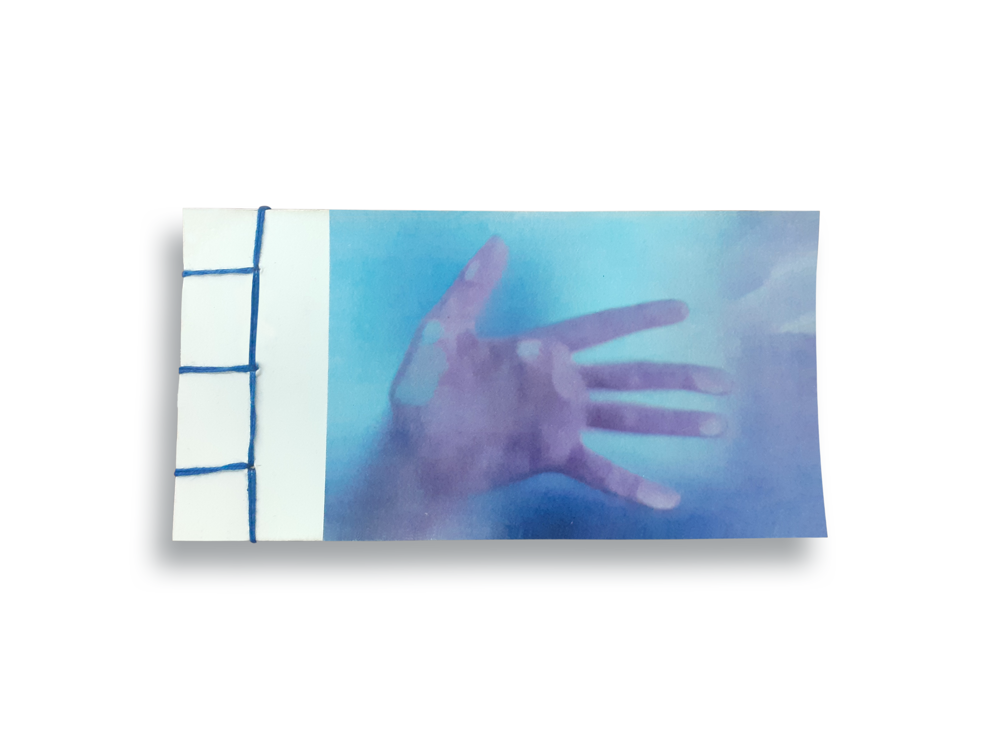

Touch
In this project I decided to tackle photography and "animation" in the form of a flipbook (sewn by me in the japanese style).
The theme was the sence of touch, represented by hands doing various activities.

